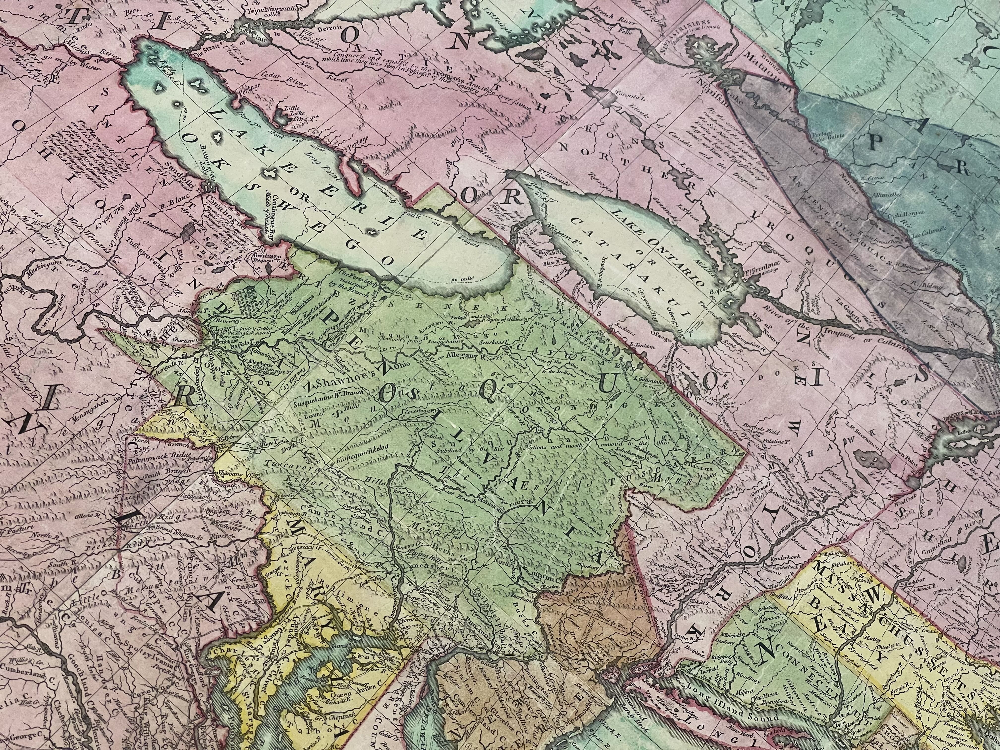

This project seeks to address a problem with how maps have handled the presence of Native nations in the Northeast. The assumption is that colonies established by the Engish formed a frontier that moved from east to west, sweeping away Native nations and peoples as it went. Recent history has moved away from a story of colonialism and toward one in which an Indigenous Continent ‘slowly became colonial’. Maps are an effective way to see that story.
To do that we need to look at maps produced by British surveyors in a different way. On one view, they show the development of colonies marked by names and framed by borders. But as they sought to visualise a colonial world, map makers also depicted a Native world of villages, towns, nations, and confederacies, sitting alongside colonial towns. If you look closely, you will see that each map-based depiction of a ‘colonial world’ is also a depiction of an Indigenous one. In this project, we sought to bring these worlds back together after two centuries of separation and misunderstanding.
We wanted to be able to show not only the layers of information that were presented in maps of North America over time, but also how historic maps consistently revealed the juxtaposition of Native and colonial presence. Since no database existed for this, our first task was to build one. To do this we selected a range of historic maps that, to us, provided the best respresentations of common worlds; these were geo-rectified over a base map and then data points from each map were selected and recorded. These data points included settlements and placenames, both Indigenous and European, as well as rivers and land pathways. A consistent feature of these early maps is that Indigenous homelands are represented by printed words and phrases but their physical extent, unlike that of colonies, are not demarcated by boundary lines. This is starkly illustrated in the image below (an excerpt from John Mitchell's iconic map of 1755). Numerous words and phrases indicate areas associated with particular peoples and Native Nations, and the map's largest label - which arcs across the centre of the map, is 'The Six Nations, or Iroquois'. In the absence of printed boundaries we captured the mapmakers' understandings of the relative locations of Native nations and peoples by recording the position and extent of the associated text segments on the map. It is important to realise, then, that when our map displays a polygon with the associated text "Senekas" this polygon is not delimiting a geographical area but rather the position and alignment of a printed word on the map.

There are two ways to interact with the Movement and Common Worlds map application. The first is through the Stories. Start at the 'Overview' and simply scroll downwards slowly. The map display changes to complement the accompanying text and images. The second mode allows you to explore freely, using a set of filters to see information captured from specific maps.
This project is part of 'Brightening the Covenant Chain: Revealing Cultures of Diplomacy between the Crown and the Iroquois Confederacy'. Arts and Humanities Research Council of the United Kingdom, Standard Research Grant AH/T006099/1, Principal Investigator: Professor Joy Porter. Project Team: Charles Prior (project lead, author of map stories); Dr Matthias Wong (PDRA - data mining); Jenson Morse (Project Intern); King’s Digital Lab (Paul Caton, Neil Jakeman, Elliot Hall, Tiffany Ong, Lucie Hao); Project review held at RAI with input from panel: Max Edelson, Chad Anderson, Hayden Haynes (Seneca Nation), Saliha Belmessous, Cassie Wise, Miriam Davis Rosenbaum (National Indian Education Association).